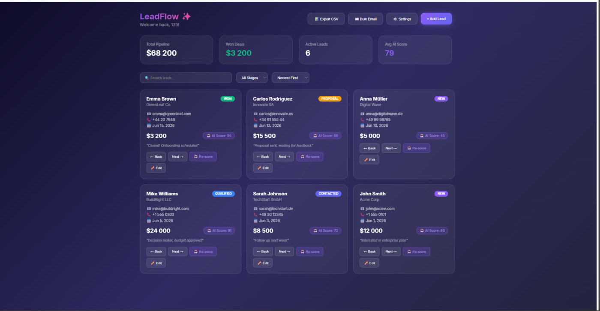
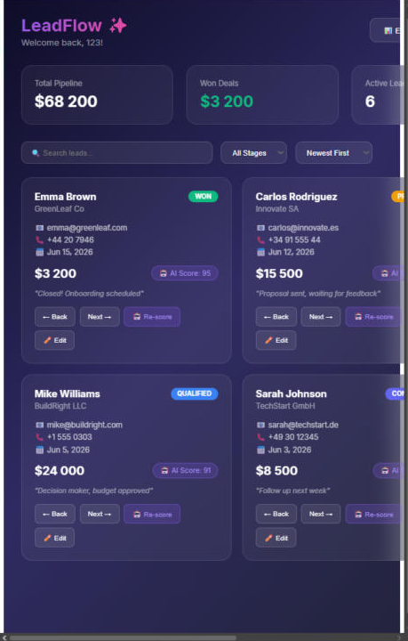
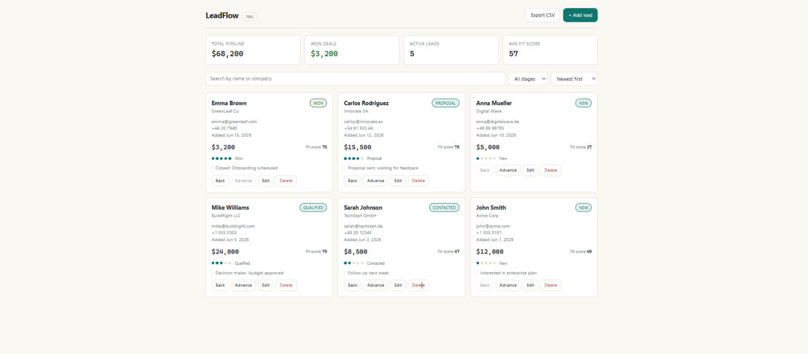
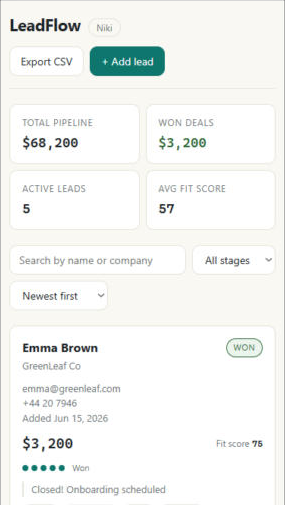

AI App Rescue - Case Study
A "finished" AI-generated CRM.
12 problems the founder couldn't see.
LeadFlow is a typical vibe-coded app: looks done in a screenshot, falls apart in the first
real session. Below is the full rescue - audit, triage, repair - exactly the process I run
on client projects.
Stack: React + Vite
Findings: 12 (3 blockers, 5 traps, 4 debt)
Time: ~8 hours
Every fix = 1 commit
Before

before-desktop.png
'" />
Default AI look; "Synced to database" toast over data that vanishes on refresh.

before-mobile.png
'" />
Mobile at 380px: fixed 1200px container, horizontal scroll, unusable.
- Data lost on every refresh, save confirmation is fake
- OpenAI API key shipped to every visitor
- Adding two leads quickly silently drops one
- Export, Settings, Bulk Email buttons do nothing
- 1101-line single component
After

after-desktop.png
'" />
New "Ledger" direction: paper background, hairline borders, tabular numerals, pipeline rail.

after-mobile.png'" />
Same screen at 380px: single column, everything reachable.
Open live demo →
- Data truly persists; storage layer is a 2-function seam for a real backend
- No secrets in the client; deterministic fit scoring
- Race-free state updates, validated forms, honest UI
- CSV export actually exports
- 10 focused files, thin 100-line App shell
The 12 findings
Triaged the way I quote real rescues: blockers first (the client sees these), traps second (the client can't see these - that's what they pay for), debt last.
- Blocker Fake persistence: all data in React state, "Synced to database" toast unconditional, POST to a dead URL swallowed by an empty catch.
localStorage layer with an explicit backend seam; save failures surface to the user
- Blocker Race conditions: every mutation wrapped in setTimeout over stale state - fast actions silently lose writes; duplicate ids break React keys.
functional setState everywhere, crypto.randomUUID ids
- Blocker Forms accept garbage: empty names, $NaN deal values that corrupt totals.
field validation with inline errors; numbers parsed once, checked once
- Trap OpenAI API key hardcoded in the client bundle - extractable by any visitor in devtools.
removed the client call entirely; rule-based scoring (deterministic, free, instant)
- Trap .env with a Supabase service_role key committed to git, no .gitignore.
untracked + .gitignore; documented that rotation, not deletion, is the fix
- Trap Fake auth: any credentials log in, "admin123" hardcoded in the bundle, delete button hidden in UI only.
honest labeled demo gate; no pretend security claims anywhere
- Trap Empty catch blocks and zero loading states - every failure is a silent frozen UI.
every async path either succeeds visibly or fails visibly
- Trap README promises Supabase sync, RBAC, CSV export, mobile support - none exist.
honest README: what it does, what it deliberately doesn't
- Debt No viewport meta, fixed 1200px layout, 3-column grid with min-width cards: broken below 900px.
responsive grid from 380px, real media queries, tested at 380/900
- Debt Dead buttons: Export CSV, Bulk Email, Settings rendered with empty handlers.
CSV export implemented for real; the other two removed - honest scope beats fake depth
- Debt 1101-line single component: all state, both modals, data layer and styling in one file, plus two dead Button components.
split into 10 focused files; App is a 100-line shell
- Debt 343 KB bundle: moment + lodash + axios + uuid imported for one date format and two sums; console.log noise (including a partial API key) in production.
all four dropped for native platform APIs - bundle down 55%
Measured, not claimed
Numbers from the build, not adjectives.
| Metric | Before | After |
|---|
| Data survives refresh | No | Yes |
| Secrets in client bundle | 2 keys | 0 |
| Bundle size (gzip) | 343 KB (114) | 155 KB (50) |
| Runtime dependencies | 6 | 2 (react, react-dom) |
| Largest component | 1101 lines | ~150 lines |
| Buttons that do nothing | 3 | 0 |
| Usable at 380px | No | Yes |
The method
Same four phases on every rescue - because the visible bug is never the only bug.
01
Audit
Automated scan + manual walk of the one flow that must work. No fixes yet.
02
Triage
Blocker / trap / cosmetic. Traps are the value: clients can't see them.
03
Repair
One commit per fix, messages a founder can read. No silent scope creep.
04
Report
Plain-language summary up top, technical appendix below. You're reading one.
Have an app that's "90% done" for three months?
This rescue took ~8 hours end to end. The first step is always a fixed-price audit - you get this exact report for your codebase, whether or not we continue.
Get an audit